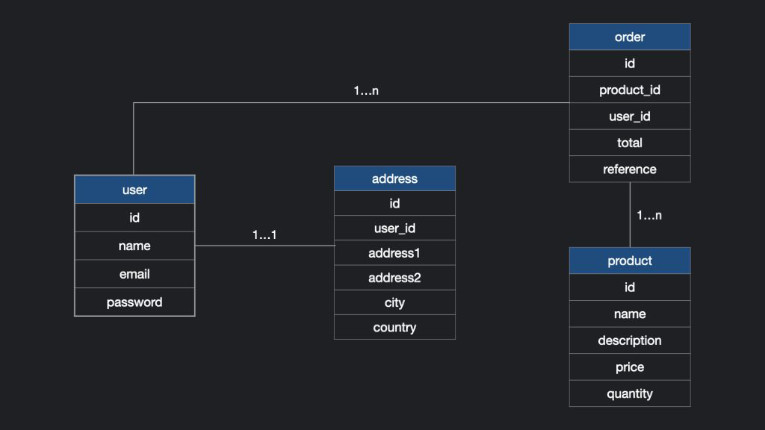
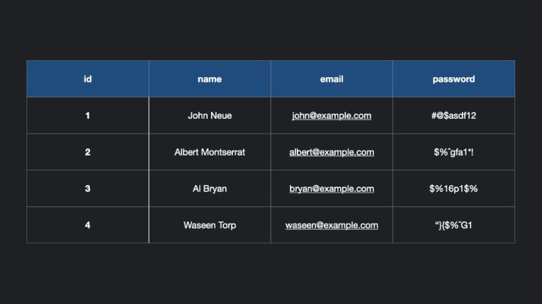
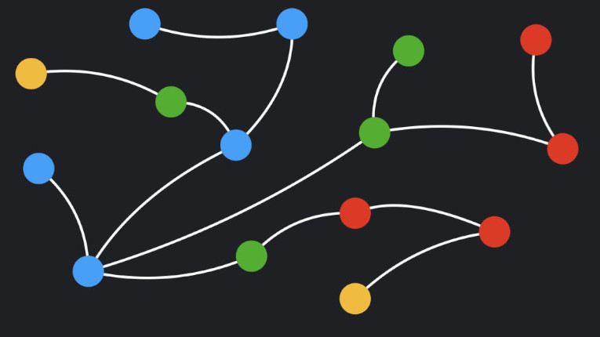
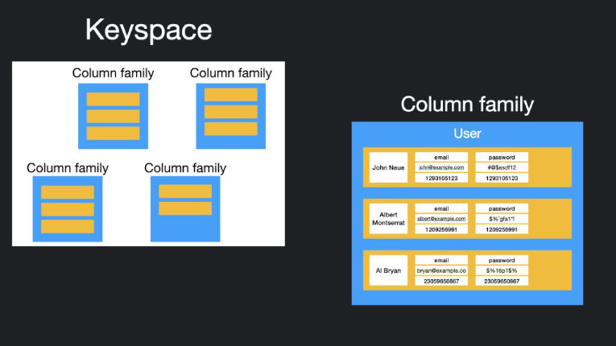
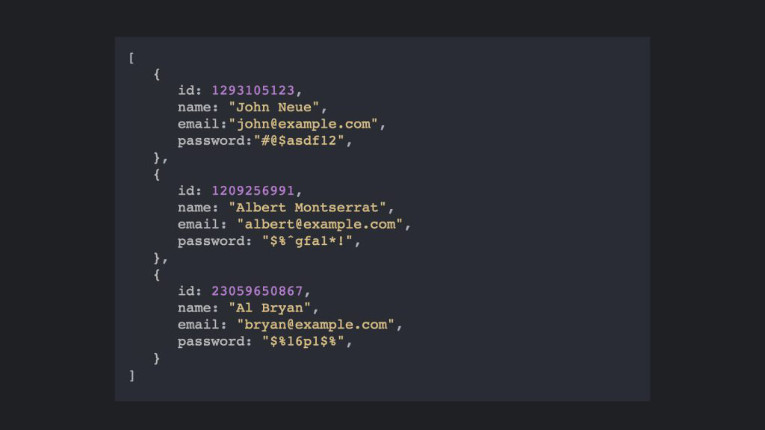

OK, então sabemos que você está aqui para pesar as diferenças técnicas entre a base de dados relacional e não relacional. Mas, antes de mergulhar, precisamos definir alguns detalhes importantes. Você precisa determinar qual a prioridade que a escalabilidade representa para o seu modelo em particular.
Para que seu modelo de dados seja tão preciso quanto possível, você precisa fazer as perguntas certas. Do contrário a sua solução pode acabar não sendo a mais adequada para o seu problema. Se você já tem isso bem definido, siga em frente.
Um banco de dados relacional é um banco de dados digital baseado no modelo relacional de dados, como proposto por E. F. Codd em 1970, uma forma intuitiva e direta de representar os dados em tabelas. As bases de dados relacionais armazenam e fornecem acesso a pontos de dados que estão relacionados entre si.
Em um banco de dados relacional, cada linha da tabela é um registro com uma identificação única chamada chave primaria. As colunas da tabela contêm os atributos dos dados, e cada registro geralmente tem um valor para cada atributo, facilitando o estabelecimento das relações entre os dados.
Existem diversos sistemas que você pode utilizar para gerenciar bancos de dados relacionais, eles são conhecidos como Sistemas de gerenciamento de bancos de dados relacionais (SGBDR). O mais popular entre eles é o MySQL, mas também temos outras opções como, Oracle Database, Microsoft SQL Server, e IBM DB2.
A grande maioria dos SGBDR oferecem a opção de usar a SQL (Structured Query Language) para consulta e manutenção do banco de dados.
É um muito comum confundir um banco de dados com um SGBD, mas talvez você fique surpreso em saber que MySQL não é um banco de dados.
Uma das vantagens de um banco de dados relacional é que, uma vez que você tenha seus dados mantidos em tabelas claramente definidas você pode conectar ou relacionar os dados entre em diferentes tabelas. Para poder identificar essas relações, você precisa examinar os dados e ter um entendimento das regras de negócio que se aplicam aos dados e tabelas.
Ao criar relações, você sempre trabalha com duas tabelas de cada vez. Uma tabela é chamada de tabela principal ou parent table e a outra é a tabela relacionada ou child table.
Os três tipos de relação que você vai encontrar nas bases de dados relacionais são, 1 para 1, 1 para muitos e muitos para muitos. As relações estão descritas abaixo.
(1...1): Ambas as tabelas podem ter apenas um registro em cada lado do relacionamento. Cada valor tabela primária refere-se a apenas um (ou nenhum) registro na tabela relacionada.(1...n): A tabela primária contém apenas um registro que pode se relacionar a nenhum, um, ou muitos registros na tabela relacionada.(n...n): Cada registro em ambas as tabelas pode se relacionar com qualquer número de registros (ou nenhum registro) na outra tabela. Muitos relacionamentos do tipo n...n requerem uma terceira tabela, conhecida como tabela de ligação ou tabela associada, porque os sistemas relacionais não podem acomodar diretamente o relacionamento.Um banco de dados não relacional é qualquer banco de dados que não segue o modelo relacional fornecido pelos sistemas tradicionais de gerenciamento de bancos de dados relacionais (SGBDR). Esta categoria de bancos de dados, é também conhecida como banco de dados NoSQL.
Os mais populares sendo MongoDB, DocumentDB, Cassandra, Couchbase, HBase, Redis, e Neo4j. Estes bancos de dados são geralmente agrupados em quatro categorias: Key-value stores, Graph stores, Column stores, e Document stores.
Como o nome sugere, em uma base de dados do tipo key-values, os dados são representados como uma coleção de pares de valores-chave. Também são conhecidos como arrays associativos, organizados em filas. Essas bases de dados armazenam os dados como uma tabela hash com uma chave única e um ponteiro para um determinado item de dados. Semelhante às tradicionais tabelas hash, esse tipo de base de dados permite o armazenamento e a recuperação de dados através de chaves.
As bases de dados do tipo key-values são utilizados sempre que os dados são consultados por parâmetros precisos e precisam ser recuperados rapidamente.
Embora as base de dados do tipo key-value possam lidar com grande quantidade de dados, elas são projetados para uma visão de alto nível (baixa profundidade) dos dados. Os bancos de dados do tipo graph conseguem manter um tamanho de armazenamento mínimo, mesmo com uma profundidade de dados maior do que outros tipos de bancos de dados.
O banco de dados NoSQL do tipo graph foi especialmente desenvolvido para lidar com conjuntos muito grandes de dados estruturados, semi-estruturados ou não estruturados. Ele ajuda as organizações a acessar, integrar e analisar dados de várias fontes.
Muito utilizado quando é necessário analisar dados de redes sociais ,por exemplo.
O armazenamento de dados em coluna, também conhecido como familia de colunas, utiliza colunas para armazenar dados ao invés de linhas como no modelo relacional. Tanto o SGBD baseado em linhas quanto o baseado em colunas utilizam SQL como linguagem de consulta, mas o SGBD orientado a colunas pode oferecer melhor desempenho.
Os bancos de dados do tipo column store utilizam um conceito chamado keyspace. Um keyspace é como um esquema no modelo relacional. O keyspace contém todas as famílias de colunas (como as tabelas do modelo relacional), que contêm linhas, que contêm colunas.
A base de dados do tipo document store, também chamadas de SGBD orientado a documentos, são caracterizadas por sua organização de dados sem esquemas.
Isso significa que os registros não precisam ter uma estrutura uniforme, ou seja, registros diferentes podem ter colunas diferentes. Os tipos dos valores podem ser diferentes para cada registro, as colunas podem ter mais de um valor (arrays) e os registros podem ter uma estrutura aninhada.
Os documentos são geralmente armazenados em uma estrutura similar ao JSON, o que deixa a vida do programador mais fácil, sendo que JSON é uma das estruturas de dados mais comuns, especialmente trabalhando com Javascript.
Bancos de dados relacionais como MySQL, PostgreSQL e SQLite3 representam e armazenam dados em tabelas e filas. Eles são baseados em um ramo da teoria do conjunto algébrico conhecido como álgebra relacional. Bancos de dados não-relacionais como o MongoDB representam dados em coleções de documentos JSON.
As bases de dados relacionais utilizam Linguagem de Consulta Estruturada (SQL), tornando-as uma boa escolha para aplicações que envolvem o gerenciamento de várias transações. A estrutura de um banco de dados relacional permite vincular informações de diferentes tabelas através do uso de chaves (ou índices) estrangeiras.
Se você estiver lidando com uma quantidade fenomenal de dados, a complexidade do banco de dados relacional e das queries necessárias também vai crescer na mesma proporção. Nessa situação, talvez você precise considerar a possibilidade de utilizar um base de dados não relacional. Uma base de dados não relacional pode armazenar dados sem uma mecânica explícita e estruturada para vincular dados de diferentes tabelas uns aos outros.